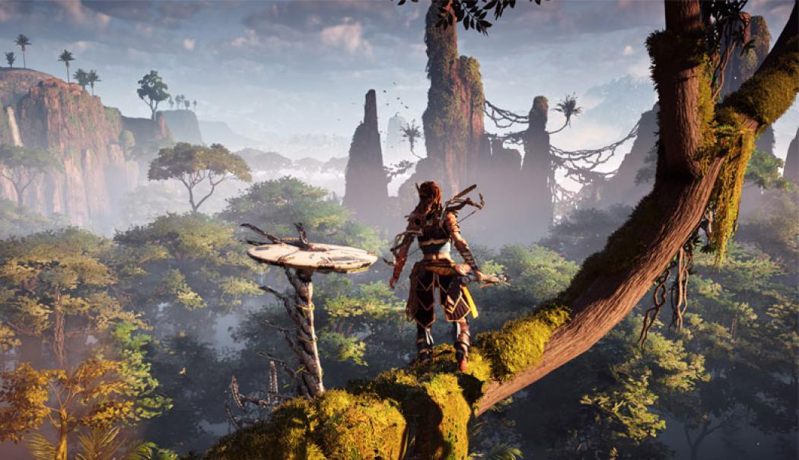

Depuis l’époque de Pong ou encore Super Mario 64, l'industrie du jeu vidéo a énormément évolué.
Aujourd'hui, les jeux offrent des graphismes ultra-réalistes, des mondes ouverts gigantesques et des mécaniques de gameplay toujours plus poussées.
Les nouvelles technologies comme le Ray-Tracing, des moteurs de jeu très performants tels que Unreal Engine 5 qui est le moteur de plusieurs jeux populaire, l’intelligence artificielle et la réalité virtuelle repoussent encore les limites du possible.

Les jeux modernes se déclinent en plusieurs tendances :
Avec l’arrivée de nouvelles technologies comme le Cloud Gaming, l’IA générative et la VR/AR, le futur du jeu vidéo semble plus prometteur que jamais.
Les frontières entre la réalité et le virtuel deviennent de plus en plus floues, ouvrant la porte à des expériences inédites.